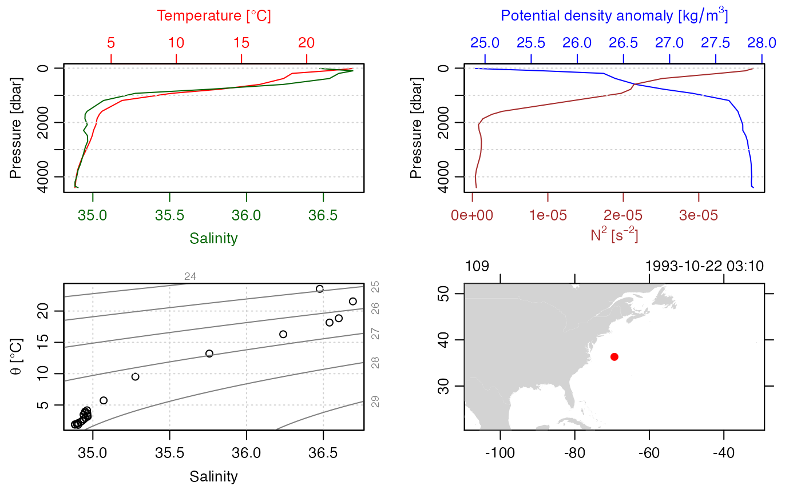

vignettes/introduction.Rmd
introduction.RmdThe ocencdf package provides a way to store approximate
forms of oce objects as NetCDF files, and to translate those files back
into oce objects. This is useful because NetCDF format is handled in a
wide variety of computing languages, and is commonly used in data
archives.
The package provides both “forward” and “reverse” functions. The former translate oce objects to NetCDF, and the latter transfer NetCDF files (made by the package) back into oce objects.
It should be noted that the reverse functions are designed to work
with NetCDF files created by the forward functions, with
e.g. ncdf2ctd() handling NetCDF files created by
ctd2ncdf() based on oce objects. The reverse functions may
be able to handle the data portions of other NetCDF files, but they do
not parse the attribute portions of those NetCDF files in a useful way.
This is because there is no way for the code to know what conventions
were used in creating an arbitrary NetCDF file. For example, a CTD
dataset might record the ship name, the name of the research program,
etc., but whether these things are recorded in the data section of the
NetCDF file, or in attributes, or not at all, cannot be known before the
fact, and guessing is a risky proposition.
Unfortunately, direct transferal of R information to NetCDF is not possible. This is because NetCDF is an array-oriented format that is not designed to hold tree-oriented data such as R lists (which are used throughout oce). It is possible to flatten simple lists, but the process gets complicated for nested lists, which are common in oce. Other difficulties with the NetCDF format include its lack of basic elements programming elements such as user-defined classes and variable-length character strings in the data portion of the files.
This package is in early development, and efforts are focused on a single oce class, the ctd object. This focus is intended to permit coding practices to gel, in preparation for the addition of other classes. Given the anticipated needs of users, the next planned item for support is ADCP data.
The design goal is to save the following elements
data slot (e.g. temperature, salinity,
etc.), renamed as appropriate.metadata slot (saved in a string form as a global
attribute).Oce uses a restricted set of names for certain variables. For
example, in ctd objects, temperature is called temperature,
and if the ctd had two temperature sensors, there would be an additional
entry called temperature2. These are not typically the
names used in raw data files, however. More commonly, temperature might
be named TEMP, for example. In recognition of this, ocencdf
provides a way to rename oce objects using other systems of names. The
mapping between oce name and other name is controlled by YAML (yet
another markup language) files, which are called varTables in this
package. Tables are provided for the Argo system and for the World
Hydrographic Program system. These are available as "argo"
and "whp", respectively. They are stored in the
inst/extdata directory of the package source tree. Users
seeking to define new naming systems must copy the formats of those
files.
The first step is to create an oce object, e.g. station 100 of the
built-in section dataset. Note the variable names, units,
and flag values in the summary.
library(ocencdf)
#> Loading required package: oce
#> Loading required package: gsw
library(oce)
data(section)
stn <- section[["station", 100]]
summary(stn)
#> CTD Summary
#> -----------
#>
#> * Start time: 1993-10-22 03:10:00
#> * Station: 109
#> * Mean Location: 36.323N 69.376W
#> * Water depth: 4499
#> * Data Overview
#>
#> Min. Mean Max. Dim. NAs OriginalName
#> pressure [dbar] 11.4 2182.5 4398.3 24 0 CTDPRS
#> temperature [°C, IPTS-68] 2.2233 7.3839 23.554 24 0 CTDTMP
#> salinity [PSS-78] 34.883 35.315 36.692 24 0 CTDSAL
#> salinityBottle [PSS-78] 34.889 35.315 36.702 24 0 SALNTY
#> oxygen [μmol/kg] 144.9 246.91 282.1 24 0 OXYGEN
#> silicate [μmol/kg] 1.71 16.852 36.52 24 0 SILCAT
#> nitrite [μmol/kg] 0 0.022 0.08 24 19 NITRIT
#> NO2+NO3 [μmol/kg] 0 14.619 23.73 24 0 NO2+NO3
#> phosphate [μmol/kg] 0 0.8925 1.39 24 0 PHSPHT
#>
#> * Data-quality Flag Scheme
#>
#> name "WHP bottle"
#> mapping list(no_information=1, no_problems_noted=2, leaking=3, did_not_trip=4, not_reported=5, discrepency=6, unknown_problem=7, did_not_trip=8, no_sample=9)
#> default c(1, 3, 4, 5, 6, 7, 8, 9)
#>
#> * Data-quality Flags
#>
#> salinity: "2" 22, "3" 2
#> salinityBottle: "2" 24
#> oxygen: "2" 24
#> silicate: "2" 24
#> nitrite: "2" 5, "5" 19
#> NO2+NO3: "2" 24
#> phosphate: "2" 24
#>
#> * Processing Log
#>
#> - 2022-01-03 13:21:08 UTC: `create 'ctd' object`
#> - 2022-01-03 13:21:08 UTC: `initializeFlagScheme(object, name="WHP bottle", mapping=list(no_information=1,no_problems_noted=2,leaking=3,did_not_trip=4,not_reported=5,discrepency=6,unknown_problem=7,did_not_trip=8,no_sample=9)), default=c(1,3,4,5,6,7,8,9))`
plot(stn)Now, save as a NetCDF file, using (say) the Argo convention for variable names.
ncfile <- tempfile(pattern = "argo", fileext = ".nc")
oce2ncdf(stn, varTable = "argo", ncfile = ncfile)
#> Converting temperature from IPTS-68 scale to ITS-90 scale.The temporary NetCDF file may be examined in various ways, but we
leave that up to the reader. Note that the column names are
e.g. TEMP in the NetCDF file, because the varTable named
"argo" establishes that nickname.
We can read the temporary NetCDF file into a ctd object and get a summary with the following.
STN <- ncdf2ctd(ncfile, varTable = "argo")
summary(STN)
#> CTD Summary
#> -----------
#>
#> * Start time: 1993-10-22 03:10:00
#> * Station: 109
#> * Mean Location: 36.323N 69.376W
#> * Water depth: 4499
#> * Data Overview
#>
#> Min. Mean Max. Dim. NAs OriginalName
#> pressure [dbar] 11.4 2182.5 4398.3 24 0 CTDPRS
#> temperature [°C, IPTS-68] 2.2228 7.3822 23.548 24 0 CTDTMP
#> salinity [PSS-78] 34.883 35.315 36.692 24 0 CTDSAL
#> salinityBottle [PSS-78] 34.889 35.315 36.702 24 0 SALNTY
#> oxygen [μmol/kg] 144.9 246.91 282.1 24 0 OXYGEN
#> silicate [μmol/kg] 1.71 16.853 36.52 24 0 SILCAT
#> nitrite [μmol/kg] 0 0.022 0.08 24 19 NITRIT
#> NO2+NO3 [μmol/kg] 0 14.619 23.73 24 0 NO2+NO3
#> phosphate [μmol/kg] 0 0.8925 1.39 24 0 PHSPHT
#>
#> * Data-quality Flag Scheme
#>
#> name "WHP bottle"
#> mapping list(no_information=1L, no_problems_noted=2L, leaking=3L, did_not_trip=4L, not_reported=5L, discrepency=6L, unknown_problem=7L, did_not_trip.1=8L, no_sample=9L)
#> default c(1L, 3L, 4L, 5L, 6L, 7L, 8L, 9L)
#>
#> * Data-quality Flags
#>
#> salinity: "2" 22, "3" 2
#> salinityBottle: "2" 24
#> oxygen: "2" 24
#> silicate: "2" 24
#> nitrite: "2" 5, "5" 19
#> NO2+NO3: "2" 24
#> phosphate: "2" 24
#>
#> * Processing Log
#>
#> - 2024-01-26 13:39:27 UTC: `create 'ctd' object`
#> - 2024-01-26 13:39:27 UTC: `as.ctd(salinity = ncdf2oce(ncfile = ncfile, varTable = varTable, debug = debug))`
plot(STN)
#> [1] TRUE